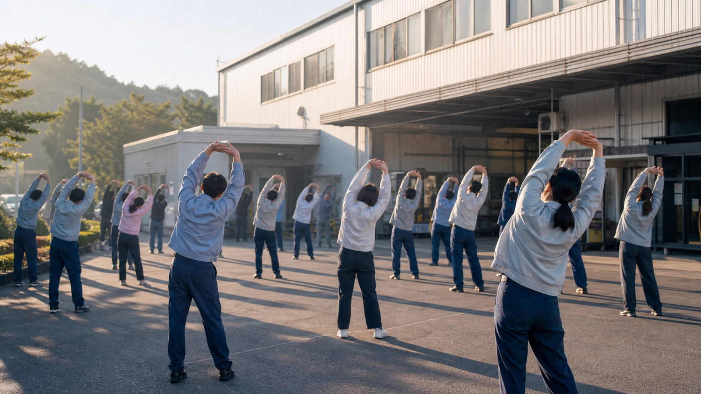
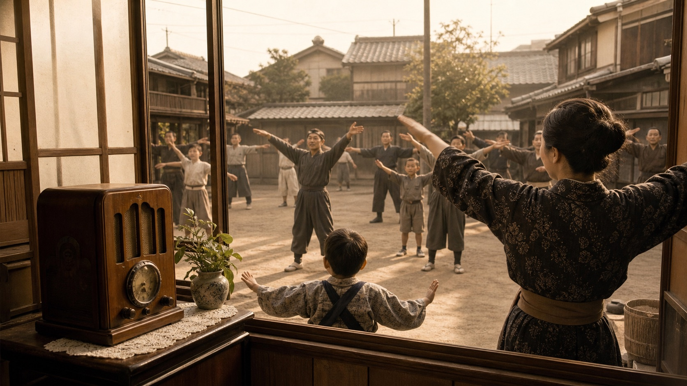
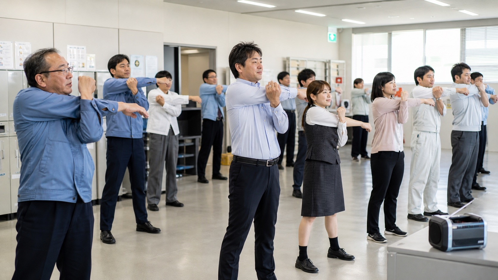

O radio taiso parece simples: alguns minutos de movimentos guiados por música, braços abrindo, tronco girando, respiração entrando no ritmo. Mas, para quem trabalha no Japão, ele pode carregar algo maior do que alongamento. É um pequeno ritual de entrada no dia: o corpo acorda, o grupo se alinha e o expediente começa com uma sensação de ordem compartilhada.
Nas fábricas, escritórios, escolas, canteiros de obra e comunidades de bairro, o radio taiso aparece como uma prática cotidiana que mistura saúde pública, disciplina social e cultura de grupo. Não é uma academia. Não é performance. É um aquecimento curto, repetível e acessível.
Quando surgiu
O radio taiso começou em 1928, no início do período Showa, inspirado por movimentos de ginástica pública e saúde preventiva. A ideia era transmitir exercícios pelo rádio para que qualquer pessoa pudesse praticar em casa, no bairro, na escola ou no trabalho. Por isso o nome: rajio taiso, literalmente ginástica pelo rádio.
A Federação Nacional do Rádio Taiso resume o espírito da prática com a ideia de ser algo que pode ser feito “a qualquer hora, em qualquer lugar, por qualquer pessoa”. Em 2028, a prática completa 100 anos, o que mostra como ela atravessou gerações sem depender de moda fitness.

Por que aparece antes do expediente
No ambiente de trabalho, o radio taiso tem uma função prática: preparar articulações, ombros, costas, pernas e respiração antes de tarefas repetitivas, esforço físico ou muitas horas sentado. Em fábrica e logística, isso conversa diretamente com prevenção de lesões. Em escritório, ajuda a quebrar a rigidez de começar o dia já travado na cadeira.
Mas existe também uma camada cultural. Fazer o mesmo movimento ao mesmo tempo cria um começo comum. Ninguém precisa discursar sobre equipe: por alguns minutos, o corpo já está dizendo “estamos começando juntos”. Para brasileiros, essa parte pode parecer formal demais no início; depois, muita gente entende que o valor está justamente na previsibilidade.
Benefícios sem exagero
O radio taiso não substitui atividade física completa, fortalecimento, fisioterapia ou cuidado médico. O benefício está em outro lugar: mobilidade leve, circulação, coordenação, postura, atenção e transição mental para o trabalho. É um aquecimento, não uma cura.
Quando feito todos os dias, porém, o efeito cultural e corporal se soma. Poucos minutos podem reduzir a sensação de começar frio, especialmente em inverno, turno cedo ou trabalho repetitivo. E como a sequência é conhecida por muita gente, a barreira de entrada é baixa: basta acompanhar o áudio e copiar o grupo.

Por que os japoneses dão importância
O Japão valoriza muito pequenas rotinas que organizam o cotidiano. Cumprimento, limpeza, reunião matinal, checagem de segurança e radio taiso fazem parte dessa lógica: antes de produzir, alinhar. Antes de correr, aquecer. Antes de falar em eficiência, reduzir descuido.
Isso não significa que todo japonês ame fazer radio taiso. Há quem faça no automático, há quem ache antigo, há quem goste. Mesmo assim, a prática sobrevive porque é barata, curta, fácil de padronizar e simbolicamente forte. Ela encaixa corpo individual dentro de um ritmo coletivo.
Como olhar para isso sendo brasileiro no Japão
Se a sua empresa faz radio taiso antes do expediente, vale observar menos a coreografia e mais o papel social do momento. Chegar no horário, participar sem deboche, acompanhar o ritmo e usar aquilo como aquecimento real ajuda na adaptação ao ambiente japonês.
No fundo, o radio taiso mostra uma coisa muito japonesa: o cuidado não precisa ser dramático para ser levado a sério. Às vezes ele aparece em três minutos de música, braços para cima, giro de tronco e todo mundo começando o dia junto.